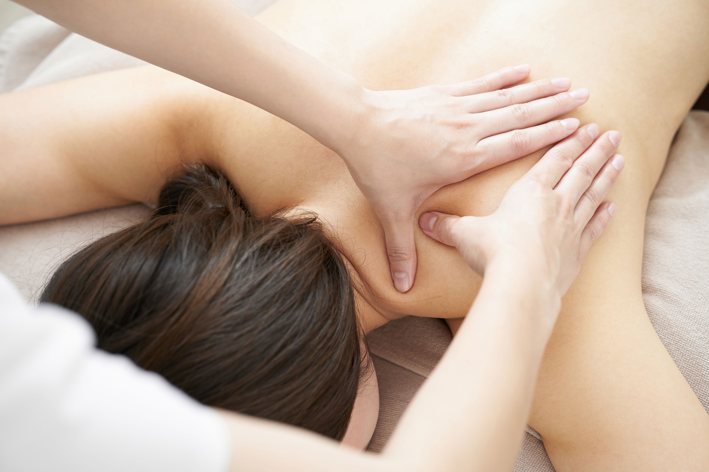

Čínská energetická masáž
Jde především o působení na základní energetické dráhy, z nichž nejdůležitější je dráha močového měchýře.
Aktivace meridiánu ovlivňuje páteř a nervovou soustavu, napomáhá uvolnit bolesti v zádech a šíji a pozitivně ovlivňovat funkci většiny orgánů v těle.
Pomůže při přepracovanosti, nesoustředěnosti, bolestech hlavy, nervozitě, podrážděnosti, při oslabení stěn močových cest, při častých zánětech močových cest a močového měchýře, při nachlazení apod.
Aktivace energie Qi a ovlivnění psychického souladu vede k zlepšení činnosti orgánů a celého organismu.
Masíruje se od vrcholku hlavy přes záda až po konečky prstů na nohách včetně horních končetin.
Čínská energetická masáž je jedna z nejvyhledávanějších masáží vůbec, klient se dokonale uvolní a usíná po pár minutách masáže.

| Služba | Délka | Cena |
|---|---|---|
| Čínská energetická masáž | 55 min | 700,- Kč |